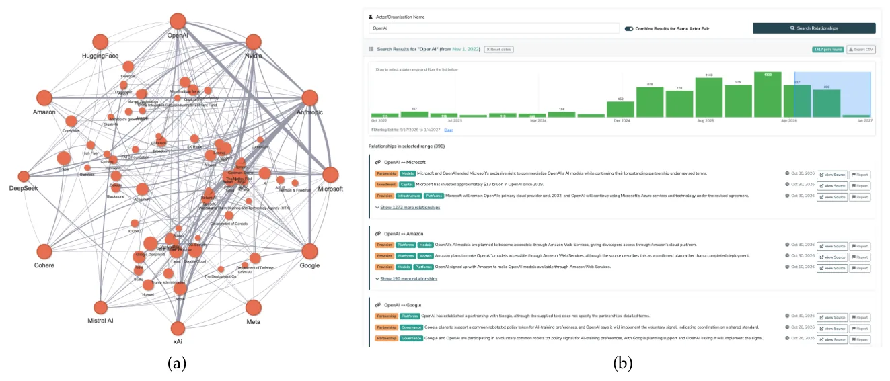
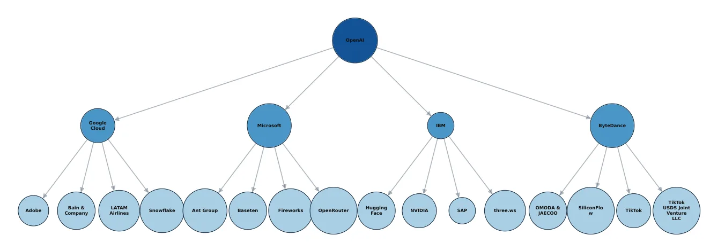

O Ecossistema Oculto por Trás dos Modelos
A produção de tecnologias habilitadas por Inteligência Artificial (IA) deixou de ser um esforço isolado de grandes laboratórios. Hoje, ela é distribuída entre um conjunto diverso de organizações. Empresas não constroem sistemas de ponta a ponta internamente; elas montam capacidades a partir de múltiplas fontes: desenvolvedores de modelos, empresas de dados e provedores de infraestrutura em nuvem. Esses atores, por sua vez, dependem de contribuições de atores anteriores na cadeia, como fabricantes de semicondutores e trabalhadores humanos de anotação de dados.
Enquanto temos uma compreensão crescente da 'pilha de IA' (as camadas técnicas de desenvolvimento e implantação), faltam dados comparáveis sobre as relações entre os atores. Não sabemos bem como modelos, dados, poder computacional (compute), capital e talento fluem entre as empresas, nem quais são as relações competitivas, regulatórias e políticas que estruturam a indústria. Este paper foca na cadeia de suprimentos organizacional de IA: a rede complexa de atores que contribuem para o desenvolvimento e implantação de sistemas de IA.

Definindo a Cadeia de Suprimentos Organizacional
Os autores definem a cadeia de suprimentos organizacional de IA como uma rede de organizações conectadas em um grafo por relações relevantes para o desenvolvimento ou implantação de IA. As arestas capturam links direcionais: um ator é 'a montante' (upstream) se fornece insumos que habilitam materialmente as atividades de IA de outro ator, que é 'a jusante' (downstream). No entanto, a estrutura não é uma cadeia linear ou uma árvore. É uma rede onde os atores podem ocupar diferentes papéis em diferentes relações e onde loops de feedback são comuns (por exemplo, dados de usuários finais melhorando modelos a montante).
Algumas ligações são simétricas, como parcerias e concorrência, manifestando-se como arestas não direcionadas. Focar nas relações organizacionais captura dinâmicas de poder consolidadas. A literatura de economia política enfatiza que cadeias de suprimentos não são condutos neutros de produção, mas estruturas onde poder e governança são negociados. Na manufatura tradicional, a estrutura da cadeia molda vulnerabilidades a choques e poder de barganha. Dinâmicas semelhantes estão emergindo na IA, especialmente com o impacto de tecnologias de IA de propósito geral em diversos setores.
Metodologia: Construindo o Mapa a partir de Documentos Públicos
A contribuição principal deste trabalho é um pipeline para mapear essa cadeia e o dataset resultante. O pipeline extrai relações, links e dependências da cadeia de suprimentos organizacional de IA a partir de fontes de dados públicas. Os autores utilizam documentos públicos, incluindo notícias, releases de imprensa e blogs de empresas, combinados com extração via LLMs (Large Language Models) para identificar e categorizar as conexões.
O dataset resultante é multilayered (multicamadas) e de larga escala. Ele contém atores e relações no ecossistema de IA, anotados com datas, descrições, tipos de relação e tags. Isso permite examinar como modelos, dados, chips, infraestrutura, capital e até talento fluem entre organizações. O objetivo é fornecer um recurso sistemático para estudar o ecossistema de IA, sua concentração e suas propriedades, servindo como base para análises empíricas da economia política do desenvolvimento de IA.

Análises Ilustrativas: Centralidade e Concentração
Os autores apresentam várias análises ilustrativas para demonstrar o poder do dataset. Um dos focos é estudar os atores mais centrais na rede. Ao analisar a centralidade, é possível identificar quais organizações atuam como hubs ou pontos de controle (chokepoints) no ecossistema. A análise de concentração de rede revela se o poder está distribuído ou consolidado nas mãos de poucos atores. Além disso, a identificação de comunidades na rede ajuda a entender clusters de cooperação ou dependência setorial.
Os gráficos de métricas de concentração ao longo do tempo (de dezembro de 2022 a junho de 2026) mostram a evolução dessas dinâmicas. A visualização permite observar se a rede está se tornando mais ou menos fragmentada, e quais são os atores que ganham ou perdem influência relativa. Isso é crucial para entender a vulnerabilidade do sistema: se um ator central falhar ou sofrer um choque, quais são os efeitos em cascata?
Resultados: Tipos de Relações e Atores
Os dados mostram uma diversidade de tipos de relação. As categorias mais comuns incluem afiliação, regulação, propriedade, dependência unilateral, investimento, fornecimento e parceria. Em termos de tipos de atores, a rede é composta por empresas, instituições acadêmicas, governos, organizações não governamentais e coalizões. As tags de IA identificam áreas específicas, como computação em nuvem, hardware, aplicações e infraestrutura.
A análise de redundância mostra que a maioria dos laços é mencionada em um único documento, mas há uma cauda longa de organizações que recebem cobertura repetida. Isso cria um viés de visibilidade. A análise de 'chokepoints' identifica onde a redundância é baixa e a dependência é alta, indicando pontos únicos de falha. Por exemplo, a dependência de hardware específico ou de provedores de dados raros pode criar vulnerabilidades sistêmicas que não são óbvias ao olhar apenas para os modelos finais.
Limitações: O que o Mapa Não Mostra
É crucial entender o que este dataset não captura. Primeiro, por ser derivado de documentos públicos, ele omite relações não divulgadas. Acordos privados, deals confidenciais e dependências estratégicas não públicas ficam fora do mapa. Segundo, a cobertura é moldada pelo design da busca e pela disponibilidade de notícias. Isso tende a super-representar grandes empresas e acordos de alto perfil, enquanto pequenos atores ou relações menos midiáticas podem ser sub-representados.
Terceiro, as buscas foram sementeadas através de grandes provedores de modelos, o que cobre apenas um segmento da cadeia de suprimentos mais ampla. A cobertura de outros segmentos, como fabricantes de chips específicos, provedores de dados especializados ou usuários finais de nicho, é limitada. Os autores reconhecem que o dataset é necessariamente incompleto e que a abordagem atual fornece apenas uma visão parcial, porém valiosa, da estrutura do ecossistema.
Implicações para Governança e Regulação
A mapeamento sistemático da cadeia de suprimentos de IA tem implicações diretas para a governança. Governar a IA requer governar o ecossistema como um todo, não apenas os modelos finais. A visualização empírica das relações organizacionais fornece um terreno comum para estudiosos e formuladores de políticas entenderem como o ecossistema de IA está organizado e como deveria ser regulado.
Identificar onde a cadeia é concentrada e onde estão os pontos de estrangulamento (chokepoints) indica onde os riscos e vulnerabilidades existem. Isso pode orientar políticas de resiliência, como a promoção de redundância em setores críticos ou a regulação de práticas anticompetitivas em pontos de controle. Além disso, a transparência na cadeia de suprimentos pode ajudar a atribuir responsabilidade (accountability) por falhas ou danos causados por sistemas de IA, que muitas vezes envolvem múltiplas organizações.
Conclusão: Um Recurso para o Futuro da IA
Este trabalho dá um passo em direção ao mapeamento sistemático da cadeia de suprimentos de IA. Ao catalogar como os ativos fluem entre organizações, os autores revelam contornos de um ecossistema que até agora estava obscuro à vista pública sistemática. O dataset disponibilizado publicamente serve como um recurso fundamental para análises futuras sobre papéis de atores, concentração, dependências e dinâmicas industriais evolutivas.
Apesar das limitações de escopo e viés de cobertura, a abordagem proposta estabelece uma metodologia para estudar a economia política da IA. Ela destaca que a produção de IA é uma atividade coletiva e distribuída, com riscos sistêmicos inerentes à sua complexidade. O próximo passo para a comunidade de pesquisa e política é expandir a cobertura, incluir fontes diversificadas e refinar a compreensão das dinâmicas de poder que estruturam o futuro da tecnologia.
O que fica
- A cadeia de suprimentos de IA não é uma linha reta, mas uma rede multidimensional de dependências entre hardware, dados, modelos e usuários finais.
- Os autores criam um dataset público que rastreia relações organizacionais documentadas publicamente, permitindo análise de centralidade e vulnerabilidades.
- A concentração de poder é visível em 'chokepoints' como provedores de chips e infraestrutura em nuvem, criando riscos sistêmicos.
- O dataset tem limitações inerentes: ignora acordos privados e tende a super-representar grandes empresas já amplamente cobertas pela mídia.
Paper original: Mapping the AI Supply Chain: Dependencies, Vulnerabilities, and Market Concentration in the AI Ecosystem
Comentários
Nenhum comentário ainda. Seja o primeiro.